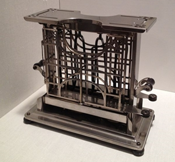
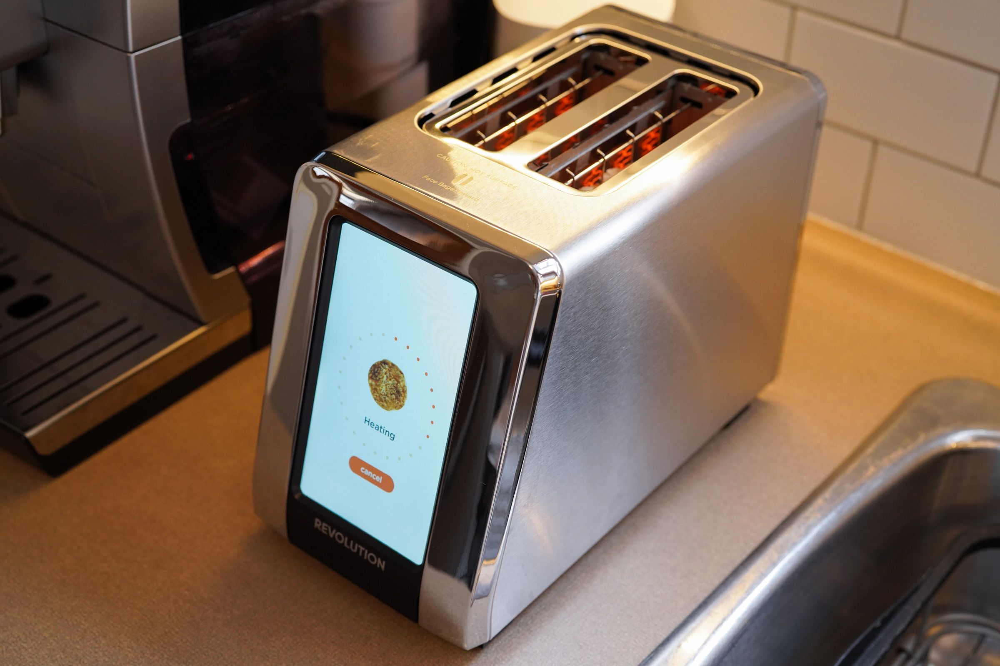

Ajalugu
Röstimine meetodina oli eeksmärgiga leiva kauemaks säilitamiseks. Esialgu röstiti leiba lahtise tule kohal. Esimene röster leiutati Iirimaal aastal 1893 Alan MacMasters'i poolt. Esialgne röster leiutati uuesti Ameerikas Frank Shailor'i poolt, kes ka selle patentis.Selline esialgne röster aga küpsetas leiba ainult ühelt poolt, kuid siiski sai seda juba kodudesse paigaldada. Aastal 1915 järnes versioon, mis iseseisvalt pööras leiba ning aastal 1919 leiutati tänapäevane ja tuttav versioon, kus leib "hüppab üles".

Mida aeg edasi, seda uhkemaks muutusid ka rösterid!1980. aastatel oli mõnel USA tipptasemel rösteril röstsaia automaatne langetamine ja tõstmine, ilma et oleks vaja hoobasid kasutada – sai lihtsalt leiba kukutada ühte sellistesse "liftrösteritesse". Mitmed projektid on lisanud röstritele täiustatud tehnoloogiat. 1990. aastal lõid Simon Hackett ja John Romkey "The Internet Toaster", rösteri, mida saab juhtida Internetist.
